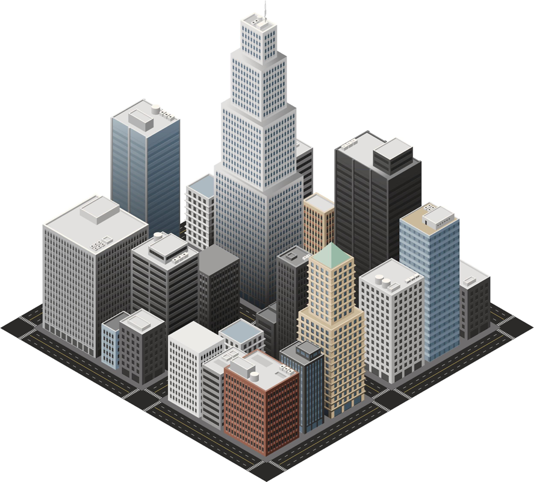

In the last example, we saw how adding noise to data protected the privacy of a family. With noise, we have obscured the family’s data, but now our results are slightly less accurate. Recall that the noise we add is random, many of the residences have small amounts of noise added, and a few have large amounts of noise added.
To visualize how privacy and accuracy are related, and how noise affects data, play with our interactive simulator.
Because of the noise, some blocks will overcount statistics with positive noise, and others will undercount them with negative noise. These undercounts and overcounts are easier to spot at small geographic levels like census blocks, since the reported results can vary slightly.
But remember, the Census Bureau collects data on the entire country, counting over 300 million people in over 11 million census blocks.

At larger geographic levels like states, often with millions of residents, the undercounts and overcounts balance the noise, and the reported results are not as affected as at the block level. This results in a set of Census 2020 data that is accurate for the needs of data users.
Next Section